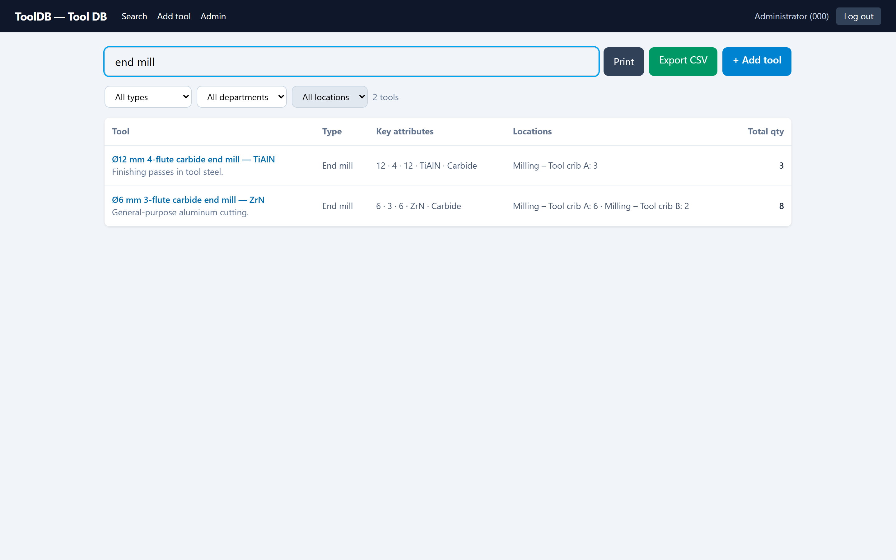
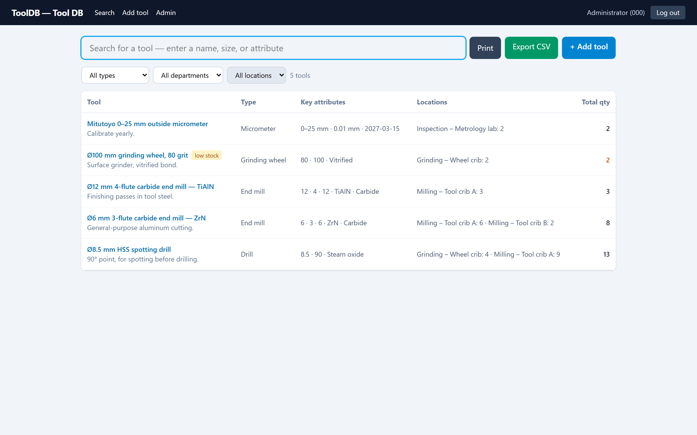
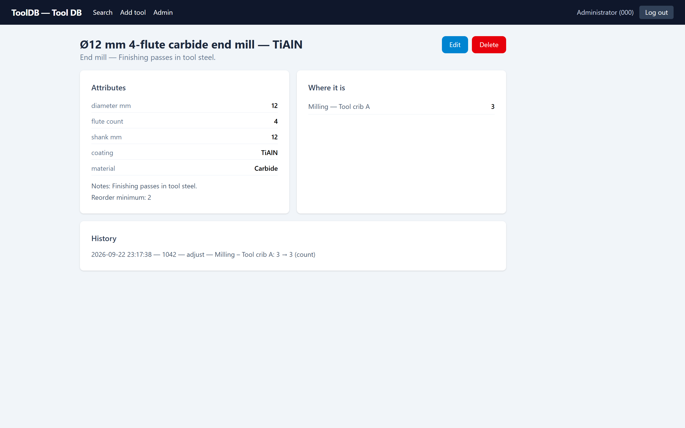
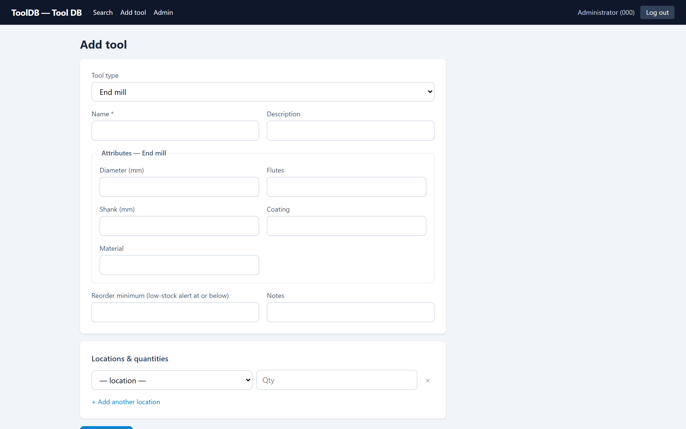
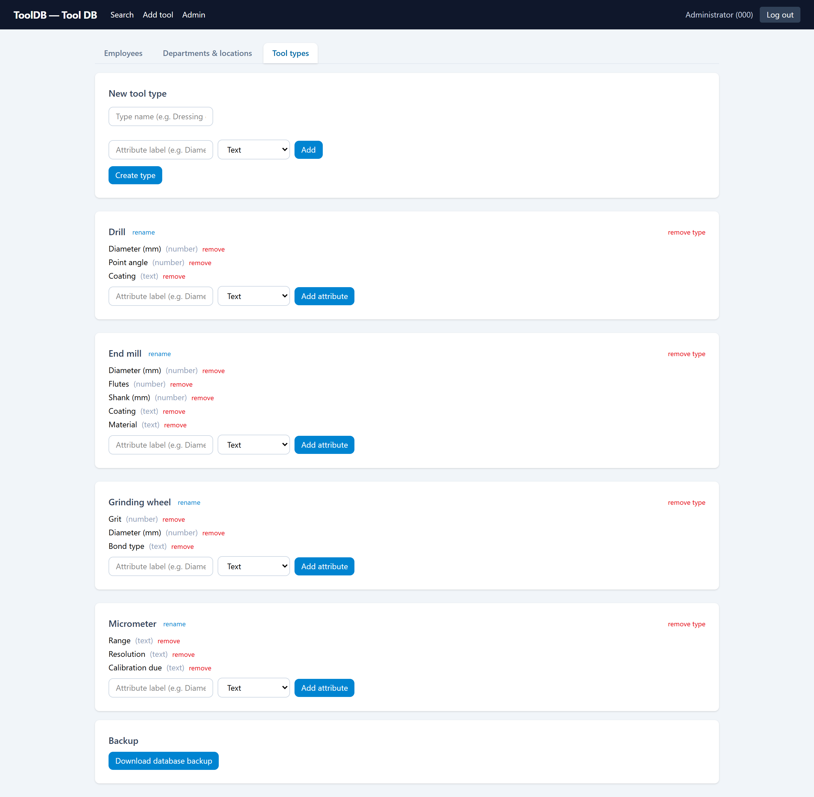
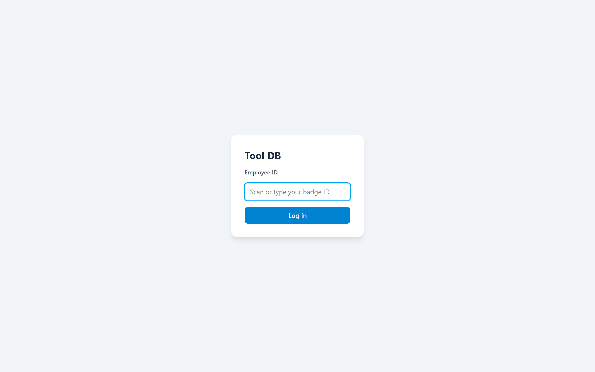

What it is
ToolDB is a self-hosted web application that tracks cutting tools, holders, grinding wheels, and measuring equipment across a machine shop. Employees log in with their badge ID, search tools by name, description, or attribute, and see live quantities at every location. Admins manage employees, departments, locations, and tool types — each type carrying its own set of attributes — and export CSV, print filtered lists, and download database backups.
It is the third iteration of the same idea: a desktop Python program, then a Node/React web app, and now a FastAPI rewrite — ported endpoint-for-endpoint and shipped as a single portable Windows folder.
The problem
A machine shop’s tooling doesn’t sit still and doesn’t fit one mold. An end mill has a diameter, flute count, shank, and coating. A grinding wheel has grit and bond type. A micrometer has a range, a resolution, and a calibration date. A collet chuck has a taper and a bore size. No single spreadsheet column list describes them all — so the records that exist end up scattered: one sheet per tool type, a notebook at the crib, and someone’s memory.
The practical failure mode is always the same: a machinist needs a Ø12 mm 4-flute carbide end mill now, and the only way to find out whether the shop has one — and where — is to walk the floor and ask. I lived this problem at the crib window. ToolDB is the tool I wished existed: one searchable place that knows what makes each type of tool different, and exactly how many are at each location.
Requirements & constraints
Every requirement below maps to something implemented in the repository.
| Tool categories | Admins define tool types; each type carries its own attribute schema (text and number fields) — no fixed global schema |
|---|---|
| Locations | Locations belong to departments; stock is tracked per tool per location, never negative |
| Reorder point | Per-tool reorder_min drives low-stock badges on the full inventory list |
| Identification | Badge-ID login — no passwords on the floor; admin actions gated separately |
| Search & filter | One query box matches name, description, and attribute values; dropdown filters by type, department, and location |
| Record editing | Create, edit, and delete tools; set per-location counts; full CRUD on types, departments, locations, employees (including bulk import) |
| Accountability | Every action is written to an activity log; each tool page shows its own history |
| Getting data out | RFC-4180 CSV export and print views for filtered lists; database backup via download |
| Deployment | One always-on Windows PC on the shop network, run by non-developers — no installer, no admin rights, no internet dependency |
How it fits together
One process serves everything: FastAPI serves the built React app and the JSON API on the same port, talking to a single SQLite database in WAL mode. There is deliberately nothing else to run.
Routers: auth · tools · tool-types · departments (+ locations) · employees · admin (config, backup) — each covered by the pytest API suite.
The schema — and the part that isn’t fixed
The relational half is conventional: six tables, real foreign keys, CHECK constraints. The interesting half is the two JSON columns that let each tool type define its own attributes without touching the schema.
- badge_idPK
- name
- active
- is_admin
- idPK
- nameUNIQUE
- idPK
- department_idFK
- nameUNIQUE
- idPK
- nameUNIQUE
- attribute_schemaJSON
- idPK
- name
- description
- tool_type_idFK
- attributesJSON
- notes
- reorder_min
- tool_id + location_idPK
- quantityCHECK ≥ 0
- idPK
- timestamp
- badge_id
- action · entity · details
locations.department_id → departments.id · tools.tool_type_id → tool_types.id · inventory composites tool × location.
The two amber tables are the whole trick. tool_types.attribute_schema
is an ordered list of field definitions — a key, a label, and a type
of text or number. Every tool of that type
stores its values in tools.attributes against those keys.
The form renders itself from the schema, and validation coerces
values against it: numbers must be finite (bools, NaN, and
Infinity rejected), whole numbers stay integers, and
decimal values such as 0.250 round-trip exactly — the
difference between a ¼ inch end mill and a 6.35 mm one
matters.
Same tools table, two different attribute sets —
defined by the shop in the Admin screen, not by a migration.
Interface
The UI is a small React SPA with four real screens. Each one is built around a single shop-floor question.





Technical decisions
Each of these is a trade-off made deliberately for the setting: a small shop floor with one always-on Windows PC. They would be different choices for an internet-facing app at scale.
-
Badge-only login, no passwords
The audience is a physically controlled building; the alternative — passwords for machine operators wearing gloves — is real friction. Admin actions are gated separately from everyday use. If the app ever left the LAN, a per-badge PIN would come first.
-
JSON attributes instead of a fixed schema
Adding a column per tool property would make every new tool type a migration. Instead, types own an attribute schema and tools own an attribute dict — the form, the validation, and the search all read from the same schema. The cost is honest: attribute values are searched with
json_eachrather than indexed columns, which is the right trade at shop scale. -
One shared SQLite connection behind a lock
Sync FastAPI endpoints run in a threadpool, so separate connections per request could interleave transactions — an exception raised inside one request’s
with conn:would roll back another request’s in-flight writes. Every request shares one connection handed out under athreading.Lockby a single dependency, which serializes access. At a handful of concurrent users the lock is never the bottleneck; past that, the fix is per-request connections or Postgres — not more locks. -
SQLite in WAL mode, not a database server
Zero install, the data is one file that’s trivial to back up — and the app backs it up automatically, daily, keeping the newest 30. WAL lets readers proceed while a write is in flight. Real foreign keys and CHECK constraints mean a move to Postgres later is a migration, not a rewrite.
-
Signed-cookie sessions with a stable secret
Sessions are signed cookies, not server-side storage, and the signing secret lives in a
session-secretfile — so restarting the server doesn’t log everyone out.SameSite=laxplus a same-origin SPA keeps the CSRF surface minimal. -
Ships as a portable folder, not a service
The server PC is managed by non-developers. PyInstaller bundles the API and the built UI into
dist\ToolDB: copy the folder, double-click the exe, no admin rights. Diagnostics go to a log file; auto-start is plain Task Scheduler; disaster recovery is documented as “copy the folder, restore a backup file.”
Challenges
“Which fields?” — every tool answers differently
The defining problem. A single tool record has to hold an end mill’s flute count and a micrometer’s calibration date without null-ing its way through a hundred mostly-empty columns. The implemented answer is the schema/attributes pair described above, with validation that coerces values against each type’s schema and strips unknown keys — and search that reaches into the JSON so typing “TiAlN” finds the right end mill.
Silent lost writes in a threadpool
Under load, routine 409 collisions could roll back another request’s in-flight writes — a bug that produces no error, just missing rows. Tracing it led to the shared-connection-with-lock design, which also closed a check-then-act race in the last-admin guard.
Software that outlives its developer’s presence
The app has to be operable by the shop itself. That pushed work into things that never show in a demo: a configuration file with sensible defaults, an hourly-retrying auto-backup, a plain-text troubleshooting and disaster-recovery guide shipped inside the build, and bootstrap admin logins that survive restarts but can’t resurrect a deliberately deactivated account.
Where it stands
Implemented and verified in the repository:
- BUILTBadge-ID login with signed-cookie sessions; separate admin gate; bulk employee import
- BUILTSearch across names, descriptions, and attribute values; type/department/location filters
- BUILTPer-location inventory with a non-negative CHECK; per-tool reorder minimums with low-stock badges
- BUILTShop-defined tool types with custom text/number attribute schemas, driving forms and validation
- BUILTActivity log with per-tool history; CSV export; print views; manual and daily automatic backups
- BUILTpytest API suite covering auth, tools, types, departments, employees, export, search, validation, and backups — running in CI on Ubuntu and Windows
What I learned
I came to software from a CNC machine, not a bootcamp, and this
project is the cleanest expression of that path. The domain
knowledge — what a flute count is, why calibration dates matter, why
operators won’t tolerate a login form — came from standing at
the machine. The mathematics and data-science training showed up in
where it counts: modeling the attribute problem as data (a schema,
not columns), thinking about invariants and race conditions, and
writing validation that treats 0.250 and
6.35 as first-class numbers. And building the whole
stack — React, FastAPI, SQLite, packaging, CI — end to end taught me
that the hardest part of shop software isn’t the code. It’s
being honest about how the floor actually works.
Where it could go next
Not built — candidate revisions, in the order I’d reach for them.
- ProposedCheckout / check-in — who has which tool right now, not just which location
- ProposedBarcode or QR labels on crib bins, scanned into search and inventory counts
- ProposedCalibration reminders — measuring-tool types already carry a
calibration_dueattribute; surfacing it as an alert is a small step - ProposedUsage history and consumption reporting — which tools burn fastest, per machine and per department
- ProposedIndexed attribute search or materialized columns if attribute search volume ever outgrows
json_each